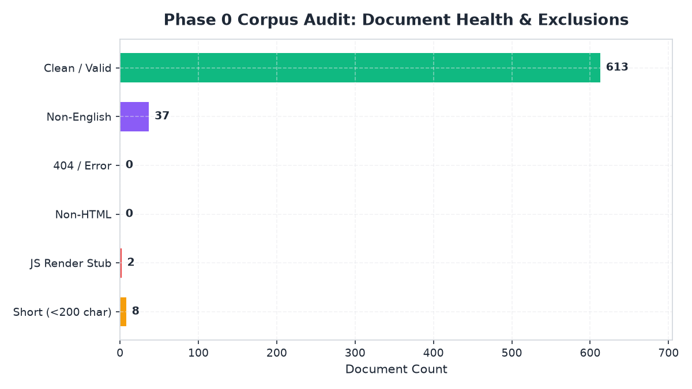
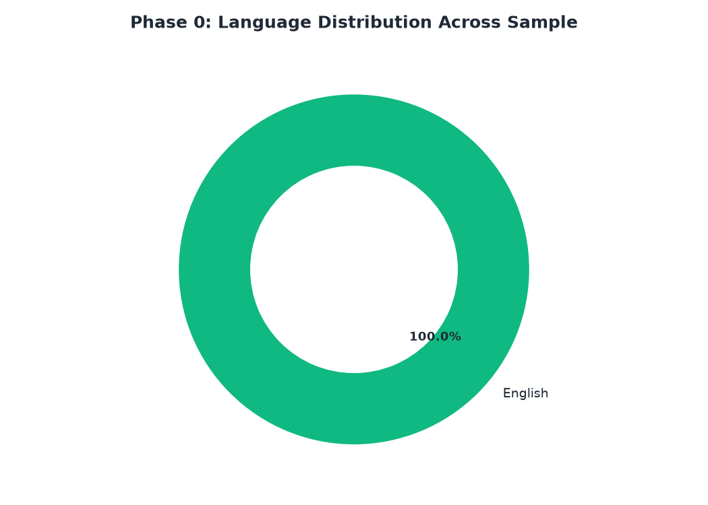
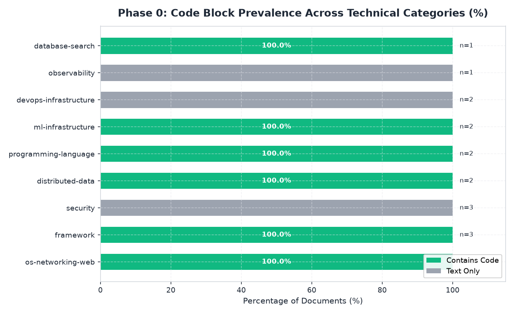
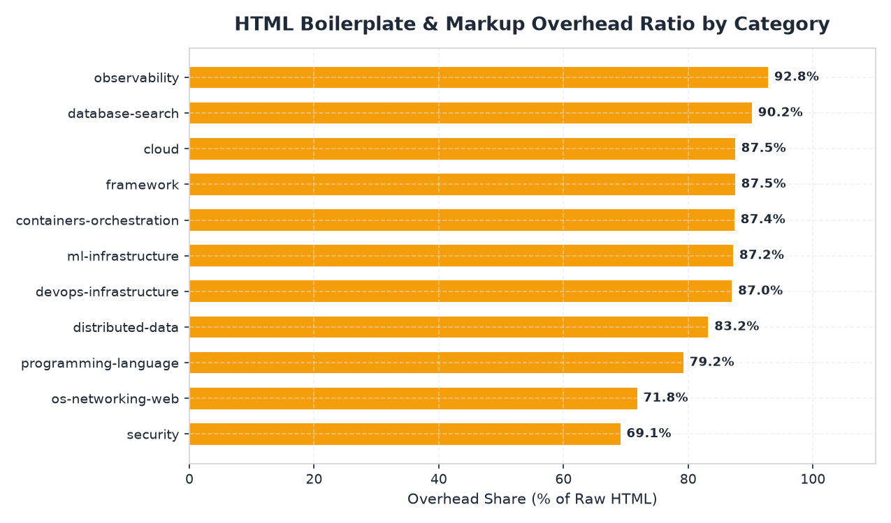
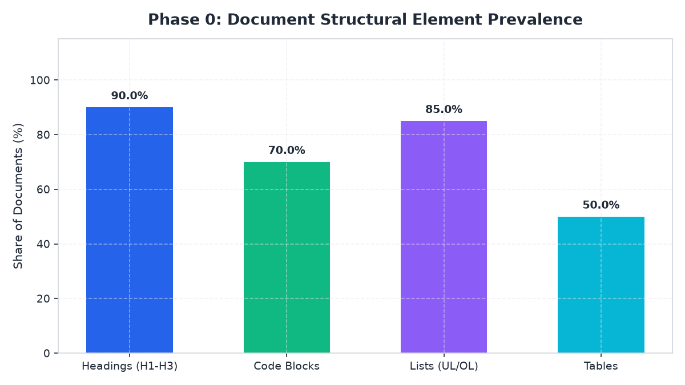
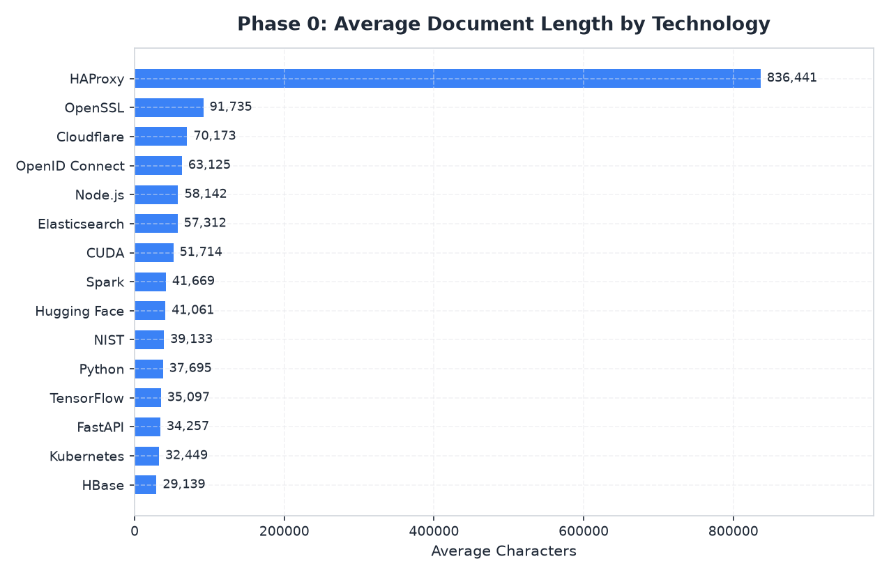
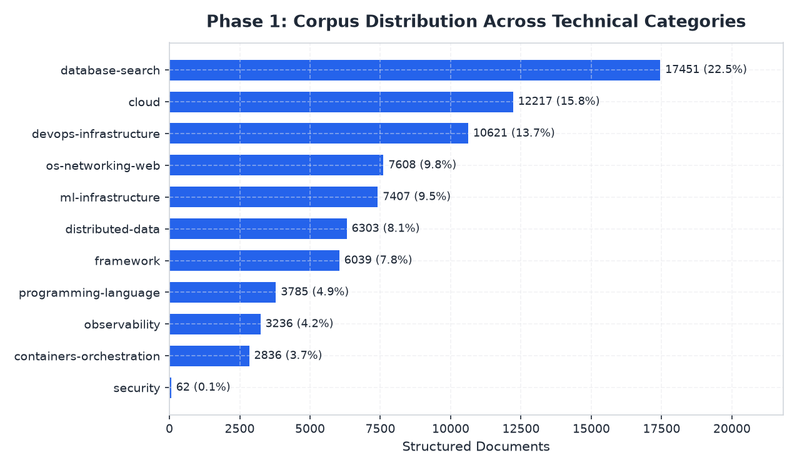
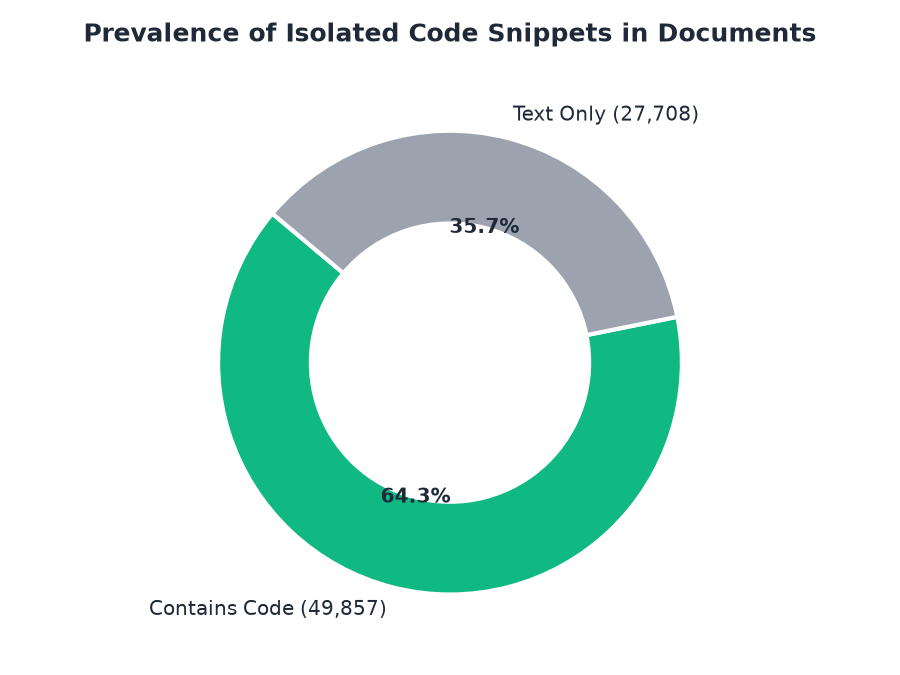
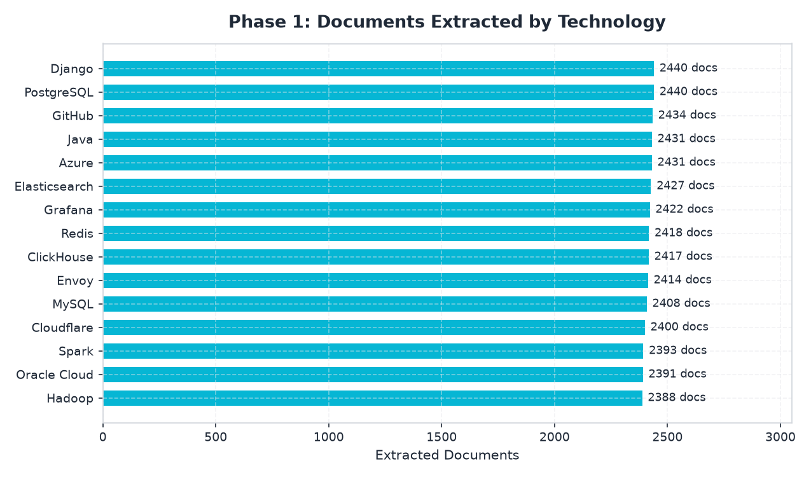

Multi-dimensional analytical visualizations for corpus audit, language distribution, code presence, and extraction metrics.
Across 11 categories
Passed all flags
Documents with code
Multilingual mirrors
SimHash Hamming ≤ 3
Comprehensive breakdown of document quality, multilingual presence, code density, and DOM characteristics.
Document quality & defect flags.

Multilingual shares in the corpus.

Prevalence of code blocks across domains.

Markup & chrome percentage by category.

Prevalence of headings, code, tables & lists.

Average character length across technologies.

Output metrics from the multi-zone HTML parser.



Recommended: Exclude < 200 chars to drop empty stubs while retaining API docs.
Recommended: Drop non-English docs (e.g. Japanese Oracle docs, Chinese docs).
Recommended: Collapse SimHash clusters (Hamming ≤ 3) to 1 representative document.
Recommended: Zone weights across Title, Headings, Body, and Code blocks.